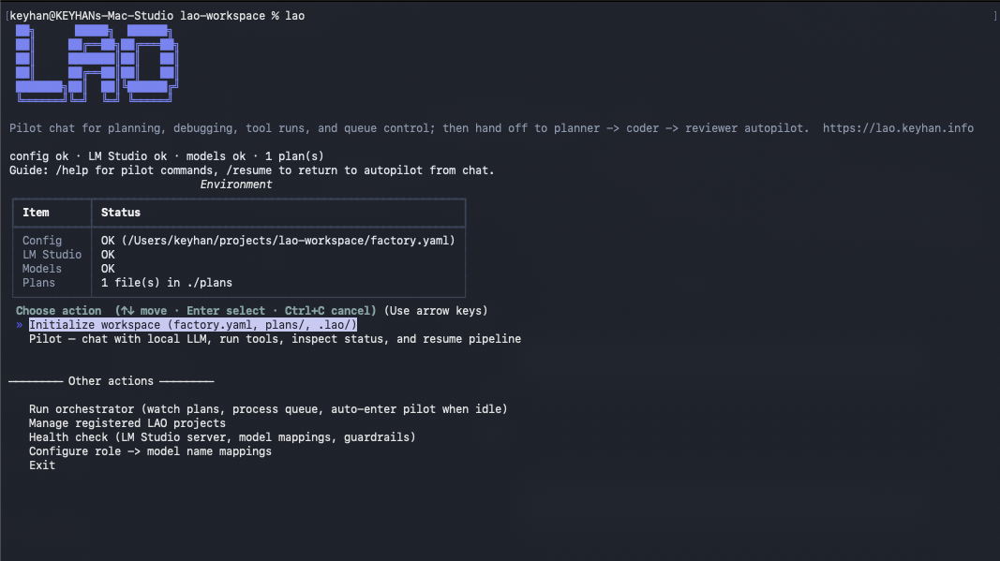
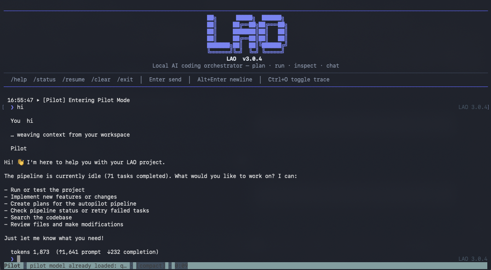

Pilot Mode
Interactive agent with filesystem + shell tools, pipeline introspection, plan creation, /project
switching, and guardrails when tools error repeatedly.
v3.0.12 · Install first · Pilot Mode · LM Studio
██╗ █████╗ ██████╗
██║ ██╔══██╗██╔═══██╗
██║ ███████║██║ ██║
██║ ██╔══██║██║ ██║
███████╗██║ ██║╚██████╔╝
╚══════╝╚═╝ ╚═╝ ╚═════╝
16:55:47 ▶ [Pilot] Entering Pilot Mode
… weaving context from your workspace
❯ hi
/help /status /resume /project · Enter send · Alt+Enter newline
Local AI Agent Orchestrator (LAO) runs a disciplined
planner → coder → reviewer pipeline—and when work pauses,
Pilot Mode gives you a chat similar to Claude Code or Cursor: tools, queue status, plans,
and
/resume back to autopilot. Multi-project? Use lao projects. State stays in
SQLite; optional per-plan Git keeps history honest.
Quick start
$ curl -fsSL https://lao.keyhan.info/install.sh | bash$ pip install local-ai-agent-orchestrator$ lao
# choose "Initialize workspace" or "Pilot", or run `lao projects scan`
$ lao health
$ lao run
$ lao pilot
LM Studio: Install the desktop app, start the
local server, and load the models your factory.yaml keys refer to—LAO uses LM Studio’s
HTTP load/unload API for memory-aware model switching (see README Prerequisites).
The one-liner uses pipx if installed, otherwise pip install --user.
Audit the script on GitHub
before running. Existing project? Clone into ./MyRepo/ and use plans/MyRepo.md
so LAO works directly in that codebase folder.
Capabilities
Interactive agent with filesystem + shell tools, pipeline introspection, plan creation, /project
switching, and guardrails when tools error repeatedly.
Architect breaks plans into micro-tasks. Coder edits files with tools. Reviewer approves or sends structured rework—without bloated agent-framework scaffolding.
WAL-mode queue survives crashes; retries, run logs, and token tallies stay queryable while jobs churn overnight.
Loads one big LLM at a time, unloads the rest, and waits for unified memory to settle—less swap thrash on Apple Silicon when models are tens of GB.
Optional embedder (e.g. Nomic) narrows file context before coding so small local windows still hit the right files.
Per-plan repos get LAO_PLAN.md, LAO_TASKS.json, and commits named
lao(coder): … / lao(reviewer): … so progress is traceable.
Home menu, guided init, model remap, orchestrator run, and Pilot share one coherent TTY language (Rich + prompt_toolkit) with clear next actions.
lao projects scan|use|list tracks known workspaces under ~/.lao/projects.json so
you aren't stuck in a parent directory without factory.yaml.
Flow
Run lao for status, grouped actions, and optional project scan.
lao init creates factory.yaml interactively and can bootstrap an initial plan.
lao run executes planner/coder/reviewer with per-plan workspaces and unified TTY UI.
Chat, run tools, check status—or run lao pilot directly.
/resume or the resume tool returns control to the queue.
SQLite + WAL: restart anytime; interrupted phases recover automatically.
In the terminal
Grouped home menu for first-time operators; Pilot chat with scrollback, slash commands, and a live status
strip—same build you get from pip install.


Documentation